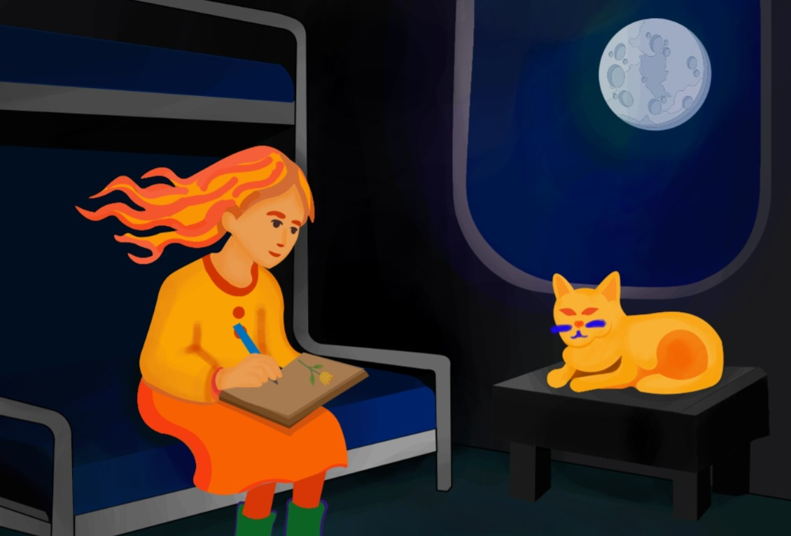
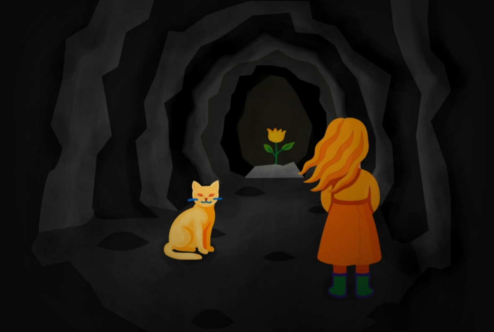
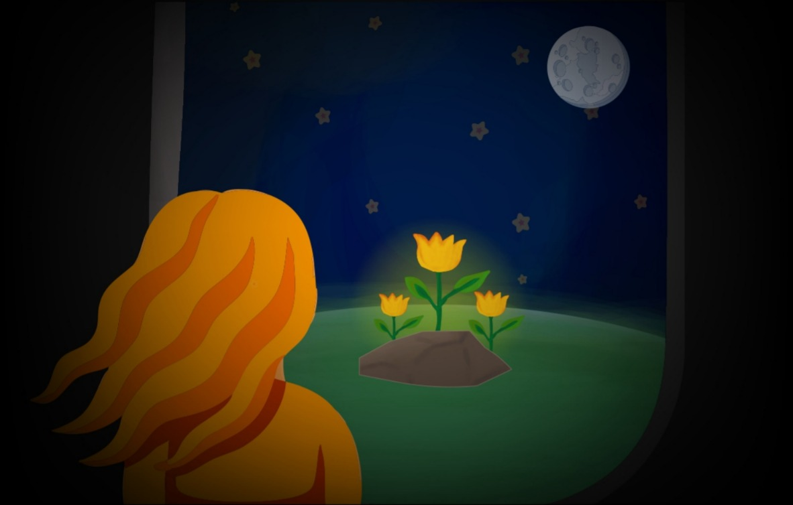

Nuestra obra se llama "La Princesa y El gato del Asteroide", cuenta la historia de una niña que vive en un asteroide llamado Azul 7 , en el cual habían florecido tres tulipanes a las que cuida y quiere mucho. Un día decide viajar por el universo para aprender y entender sus sentimientos. La princesa y el gato proviene de un asteroide llamado c-111.
"En un pequeño asteroide solitario vivía una princesa curiosa y soñadora, acompañada únicamente por un gato sabio y juguetón, y tres tulipanes que ella cuidaba con esmero. Aunque parecía tener todo lo que necesitaba, la princesa sentía un vacío en su corazón que no podía explicar. Su gato, le hablaba del universo, de otros mundos y de los sentimientos humanos."
  Nuestra obra esta inspirada del libro de "El principito"
El Principito cuenta la historia de un niño que vive en un pequeño
planeta con una rosa a la que cuida y quiere mucho. Un día decide
viajar por el universo para aprender y entender sus sentimientos. El
relato comienza cuando un aviador (el narrador) se estrella en el
desierto del Sahara y allí conoce al Principito, un niño misterioso que
le cuenta su historia. El Principito proviene de un pequeño asteroide
llamado B-612, donde vivía solo junto a una rosa muy especial. Al
sentirse confundido por los sentimientos hacia su rosa, decide viajar
para conocer otros mundos y aprender. Durante sus viajes, el Principito
visita varios planetas, donde conoce a personajes como un rey, un
vanidoso, un bebedor, un hombre de negocios, un farolero y un
geógrafo. Cada uno representa actitudes absurdas de los adultos.
Finalmente, llega a la Tierra, donde conoce a un
zorro que le enseña una lección clave:
"lo esencial es invisible a los ojos".
También comprende el verdadero valor del amor y la responsabilidad hacia su rosa.